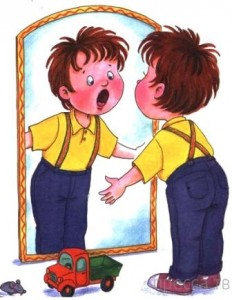

Когда идти к логопеду?
Речь формируется до 5 лет, а значит, раньше идти к логопеду не стоит. Из этой же серии утешительные советы бабушек, знакомых и соседок: «Мальчишки вообще позже начинают говорить», «Зато всё понимает, взгляд какой смышлёный» и пр. А потом пяти, а то и шестилетнего ребёнка с «кашей» во рту приводят к специалисту и просят подготовить к школе. И оказывается, что время упущено. Ведь на развитие речи могут повлиять и проблемы со слухом, зрением, щитовидной железной и даже нервной системой, а также многие психические заболевания.
Чем раньше выявится патология, тем меньше риск возникновения серьёзных логопедических проблем, поскольку сенситивный (чувствительный) период для развития речи – возраст именно до 5 лет.
Занятия с логопедом не имеют противопоказаний. Повтор звуков ещё никому не навредил. Отнюдь. В ряде случаев занятия с логопедом крайне нежелательны, например, при ОРВИ, ОРЗ и различных проблемах с носоглоткой. Пока ребёнок полностью не выздоровеет, заниматься не стоит – есть риск осложнений.
Советы ведущего специалиста.
Нельзя «сюсюкать» с ребенком, т.е. говорить лепетным языком или искажать звукопроизношение, подражая речи ребенка;
Желательно, чтобы ваша речь была всегда четкой, умеренной по темпу;
Общаясь с ребенком, не перегружайте свою речь труднопроизносимыми для детей словами, непонятными выражениями, оборотами. Фразы должны быть достаточно простыми. Перед чтением книжки, сказки новые, незнакомые слова, встречающиеся в тексте, нужно не только объяснить ребенку в доступной его пониманию форме, но и проиллюстрировать: рассмотрите яркую картинку, сходите на экскурсию и т.п.
Ребенка нельзя наказывать за ошибки в речи, передразнивать его или раздраженно поправлять. Полезно читать детям стихотворные тексты, соответствующие их возрасту.
Методики лечения дефектов речи.

Профессиональные логопеды своим трудом создают максимально комфортные условия для развития речевых возможностей за счет регулярных логопедических занятий.
Разработано множество различных программ, которые помогут справиться с возникшей проблемой у детей дошкольного возраста. Профессиональная помощь включает только лучшее лечение и методики, которые подбираются для каждого ребенка в индивидуальном порядке и учитывают его обстоятельства, способности и характер.
В логопедические занятия по развитию речи без массажа включаются следующие действия:
- Гимнастика для лицевых мышц, голосовых связок и других органов речи и артикуляции;
- обучение ребенка при помощи специальных игр;
- проведение развития слуха ребенка, что поможет лучше улавливать нужную информацию и позволить формировать грамотную речь;
- проведение упражнений, помогающих улучшить возможности детей в плане звукоподражания. Тренировки и игры уже через несколько занятий начнутприносить свои плоды и речевые способности ребенка значительно улучшаться;
- различные загадки, стишки, скороговорки цель которых развить четкую дикцию;
- разучивание чистоговорок.
Такое воздействие на ребенка позволит быстро и эффективно устранить дефекты в речи, поможет улучшить общие способности ребенка, а в дальнейшем повлияет на успеваемость при обучении в школе.